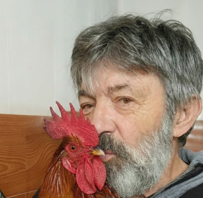
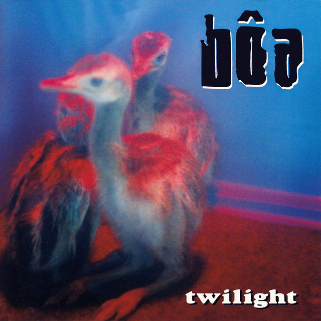
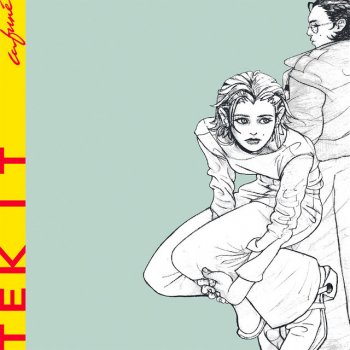

Ayudante en taller mecánico
Taller independiente - 2020 - 2022
- Apoyo en tareas básicas de mantenimiento y revisión de vehículos.
- Asistencia al técnico principal en distintas actividades.
- Organización de herramientas y espacio de trabajo.

Desarrollador Web
Soy estudiante de informática, aún sigo estudiando en la carrera de ingeniería informática. Me gusta probar cosas nuevas por mi cuenta, equivocarme y volver a intentar hasta que funcione. Me interesa principalmente la programación y entender cómo funcionan las cosas por dentro, pero aún me falta por aprender. Tengo ganas de seguir practicando y seguir mejorando.
Taller independiente - 2020 - 2022
Unidad Educativa Italo Boliviano - 4 semanas
Negocio local - Cochabamba - 2024 - ahora
Lenguajes y herramientas
Nivel
Simulación de fútbol - Steam
Capacidad de análisis táctico y ajuste de estrategias en tiempo real basándose en los recursos disponibles y el comportamiento del entorno (rival).
FPS / Survival Horror - Steam
Fortalecimiento de la comunicación asertiva y coordinación bajo presión en entornos dinámicos que requieren respuesta inmediata y roles definidos.
RTS - Battle.Net
Toma de decisiones críticas y gestión eficiente de múltiples procesos simultáneos (Multitasking) en entornos de alta complejidad.

Rock alternativo - 1998
Ritmos equilibrados que favorecen la concentración en tareas que requieren atención minuciosa al detalle.

Electrónica - 2019
Uso de entornos sonoros constantes para maximizar la productividad y mantener un flujo de trabajo estable.

Indie pop - 2021
Capacidad de mantener un ambiente de trabajo positivo y relajado, ideal para mitigar el estrés en jornadas largas.